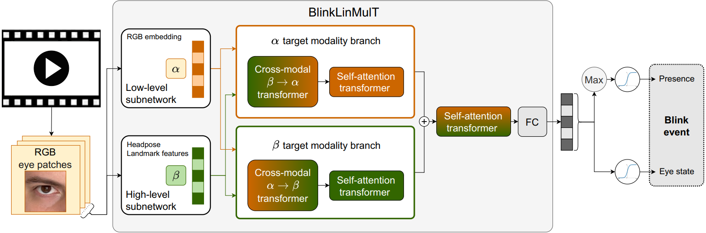

Ádám Fodor, Kristian Fenech, András Lőrincz
This work presents BlinkLinMulT, a transformer-based model for eye blink detection. While most existing approaches rely on frame-wise eye state classification, recent advancements in transformer-based sequence models have not been explored in the blink detection literature. Our approach effectively combines low- and high-level feature sequences with linear complexity cross-modal attention mechanisms and addresses challenges such as lighting changes and a wide range of head poses. Our work is the first to leverage the transformer architecture for blink presence detection and eye state recognition while successfully implementing an efficient fusion of input features. In our experiments, we utilized several publicly available benchmark datasets (CEW, ZJU, MRL Eye, RT-BENE, EyeBlink8, Researcher’s Night, and TalkingFace) to extensively show the state-of-the-art performance and generalization capability of our trained model. We hope the proposed method can serve as a new baseline for further research.
In this work, we propose a fast transformer-based framework for eye blink detection that can effectively combine low- and high-level feature sequences considering several challenges, such as lighting changes, and a variety of head poses, and also utilizes motion information from sequences of the aforementioned features. We present a modified multimodal transformer with linear attention (LinMulT), which considers multiple inputs, such as RGB texture, iris and eye landmarks, ear, and head pose angles. To our knowledge, this is the first work to use transformer architecture and implement an efficient fusion of input features, including head pose angles.
Head pose angle dependence of BlinkLinMulT in the case of blink presence detection task. The head poses are predicted by 3DDFA_V2; the colors represent the F1 score calculated for the blink presence task, which is also written within the boxes together with the number of samples (in parenthesis) considered during the metric evaluations. F1 score cannot be calculated for those extreme cases, where closed-eye samples are not available.
Test samples from all 5 sequence datasets are used for the experiment. Blinks can be predicted accurately in the case of frontal faces, and while the participant is looking up. Performance slightly decreases when the monitored person is looking down.
If you found our research helpful or influential please consider citing:
@Article{fodor2023blinklinmult,
AUTHOR = {Fodor, Ádám and Fenech, Kristian and Lőrincz, András},
TITLE = {BlinkLinMulT: Transformer-Based Eye Blink Detection},
JOURNAL = {Journal of Imaging},
VOLUME = {9},
YEAR = {2023},
NUMBER = {10},
ARTICLE-NUMBER = {196},
URL = {https://www.mdpi.com/2313-433X/9/10/196},
PubMedID = {37888303},
ISSN = {2313-433X},
DOI = {10.3390/jimaging9100196}
}